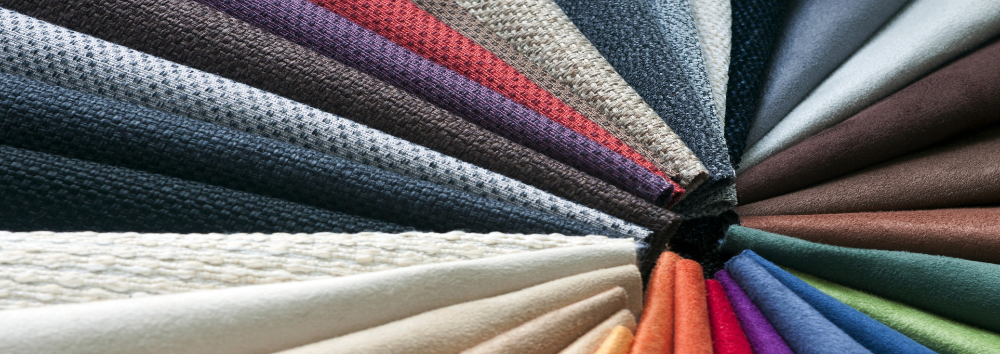

EVE Cushions

Since 1984, tailoring of Canvas was carried out at M. Pink Flower, under the supervision of Mr. Hussain Mohamed along with his wife, Ms. Maleeha Shakir. Slowly their business grew and they expanded their tailoring business to seat cushions of vehicles and speedboats to customized products for resorts such as sunbeds, cushions, sofa beds and many more. Today, this work is carried out as Eve Cushion Pvt Ltd. Established as a company in 2015, EVE Cushion Pvt Ltd explicitly is utilized as our upholstery and canvas manufacturing unit. EVE Cushions serve individual customers and take orders for bulk productions too.

Some of the services provided include;
- Repairing canvas
- Re-fabrication of seats for custom made designs
- Custom made sofa sets
- Kids sofa sets
- Sun beds
- Buggy seats and buggy covers
- Different types of seats for vessels and vehicles
- Various types of beds
- Cushioned seats
- Decorative indoor and outdoor cushions

Some of our specialties include custom designing and manufacturing; the vast varieties of fabric collections and accessories available make EVE Cushions the best choice for all our customers when it comes to the production of quality products designed and manufactured for the exact needs of our customers.